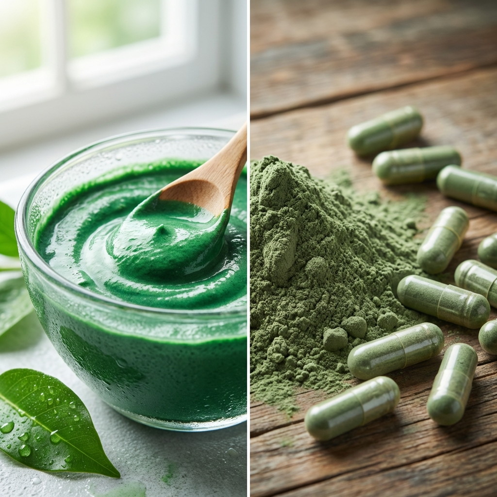

¿Qué es la Espirulina?
El "Oro Verde" de la Naturaleza
La Espirulina es una pequeña planta acuática (cianobacteria) que crece en forma de espiral. Es tan poderosa que la NASA la usa para alimentar a sus astronautas.
Su Apariencia
Es una pasta cremosa de color verde esmeralda vibrante, con un sabor suave y neutro que combina con todo.
¿Por qué FRESCA es mejor?
- ✅ 100% Viva: Mantiene todas sus enzimas y vitaminas intactas.
- ✅ Sin Olor Fuerte: A diferencia del polvo, la fresca no huele "a pescado".
- ✅ Absorción Total: Tu cuerpo la reconoce y aprovecha al instante.
- ❌ Evita Procesos: El polvo y las cápsulas pierden nutrientes por el calor del secado.
